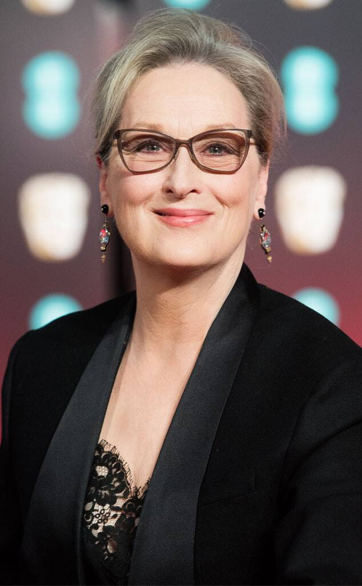
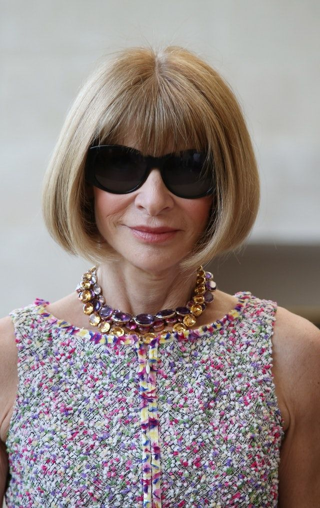

2020 Cochairs

Meryl Streep

Emma Stone

The year 2020 is a milestone for the Metropolitan Museum of Art. The New York institution will celebrate its 150th anniversary with a series of exhibitions, many of which will put the spotlight on masterworks in its collections, as well as new acquisitions made as part of the 2020 Collections Initiative in honor of the anniversary. In keeping with the year’s theme, today the Met announced that the Costume Institute’s spring exhibition will showcase a century-and-a-half of fashion history culled from its archive and presented along a “disruptive” timeline. “About Time: Fashion and Duration,” says Andrew Bolton, Wendy Yu Curator in Charge of the Costume Institute, takes a “nuanced and open-ended” approach. “It’s a reimagining of fashion history that’s fragmented, discontinuous, and heterogeneous.”
Bolton found inspiration for the exhibition in the 1992 Sally Potter film Orlando, which was based on the time-traveling Virginia Woolf novel of the same name. “There’s a wonderful scene,” he says, “in which Tilda Swinton enters the maze in an 18th-century woman’s robe à la Francaise, and as she runs through it, her clothes change to mid-19th-century dress, and she reemerges in 1850s England. That’s where the original idea came from.”
Virginia Woolf acts as the show’s “ghost narrator,” with quotes from her time-based books including Orlando, Mrs. Dalloway, and To the Lighthouse appearing throughout the exhibition, not unlike how Susan Sontag’s quotes guided viewers through this year’s Camp: Notes on Fashion show. The philosopher Henri Bergson, whose concept of la durée—time that flows, accumulates, and is indivisible—also provided some of the show’s framework. In addition, Michael Cunningham, whose novel The Hours, a postmodernist reading of Mrs. Dalloway, won the 1999 Pulitzer Prize, will contribute a short story to the exhibition’s catalogue. “What I like about Woolf’s version of time is the idea of a continuum,” Bolton says. “There’s no beginning, middle, or end. It’s one big fat middle. I always felt the same about fashion. Fashion is the present.”
It’s human nature to compartmentalize, to, as Bolton says, “look back at history with homogenous eyes.” Indeed, in a video clip shown at Karl Lagerfeld's memorial in June, Lagerfeld said: “Clothes are the first thing you think of when you imagine an era—you think of pannier dresses when you say the 18th century, before architecture or anything else.” Bolton’s mission with About Time is to challenge and complicate this tendency, and to get us to think differently about fashion history. To do so, he will divide the 160 women’s garments in the exhibition into two sections or “timescales.” T he first is a linear timeline of black looks. “It’s a very rational, regulated chronology of fashion from 1870 to 2020, the timescale of modernity,” Bolton explains. The second grouping presents what the curator describes as counter-chronologies, mostly in white ensembles, though there is also likely to be bursts of color in places. “You can see them as folds in time,” he says.
In a press release, Max Hollein, director of the Met, elaborated on the concept: “This exhibition will consider the ephemeral nature of fashion, employing flashbacks and fast-forwards to reveal how it can be both linear and cyclical.” Bolton will highlight a variety of “folds in time.” They could include comparisons between two designers of different eras, like Alaïa and Vionnet or Poiret and Galliano. “Or it might be juxtapositions between two designers from a certain period who were competitive, and one survived and one didn’t,” like “Chanel and Patou in the ’20s and Rei Kawakubo and Georgina Godley in the ’80s.”
It’s useful to think of these “counter-chronologies” or “folds” as connections. Bolton makes them across shape, motif, material, pattern, technique, and decoration. Among his favorites: the relationship between a black silk faille princess-line dress from the late 1870s and an Alexander McQueen “bumster” skirt from 1995. “Over the years, McQueen continually worked with this elongated silhouette—the princess line basically—and I’ve always felt that the bumster was the most radical version of the way he achieved it.” He continues: “What the dual timelines try to unravel is that tension in fashion between change and endurance, and transience and permanence. Ultimately, I think it advocates for a slowing down of fashion.”
The exhibition, which will be presented in the Met Fifth Avenue’s Iris and B. Gerald Cantor Exhibition Hall, will be made possible by Louis Vuitton. Bolton is working with Es Devlin, the visual artist and stage designer, on the exhibition design. “I’ve long admired her work and wanted to collaborate with her,” he says. “This theme seemed most suitable for her, she’s done several of what she calls mirror mazes and she often refers to the complexity of time with her design process.” The cochairs for the gala on Monday, May 4, will be Nicolas Ghesquière, Lin-Manuel Miranda, Meryl Streep, Emma Stone, and Anna Wintour.
About Time: Fashion and Duration will be on view at the Costume Institute from May 7 through September 7, 2020.